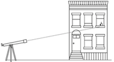
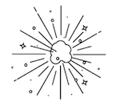
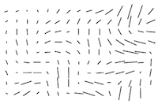
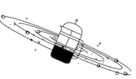
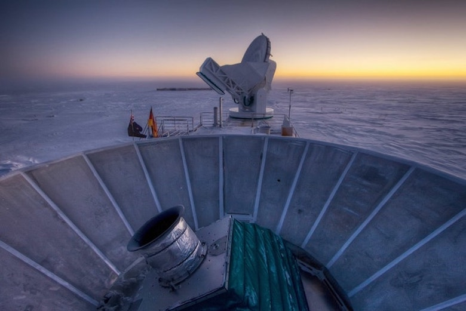
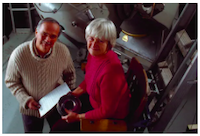
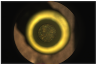
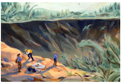

Alan Guth was one of the first physicists to
hypothesize the existence of inflation,
which explains how the universe expanded so
uniformly and so quickly in the instant after the Big Bang 13.8
billion years ago. Rick Friedman for The New York Times
By Dennis Overbye
March 17, 2014
sign up
SIGN UP FOR SCIENCE TIMES:Get stories that capture the wonders of
nature, the cosmos and the human body.d
CAMBRIDGE, Mass. — One night late in 1979, an itinerant young
physicist named Alan Guth, with a new son and a year’s
appointment at Stanford, stayed up late with his notebook and
equations, venturing far beyond the world of known physics.
He was trying to understand why there was no trace of some exotic
particles that should have been created in the Big Bang. Instead he
discovered what might have made the universe bang to begin with.
A potential hitch in the presumed course of cosmic evolution could
have infused space itself with a special energy that exerted a
repulsive force, causing the universe to swell faster than the speed
of light for a prodigiously violent instant.
If true, the rapid engorgement would solve paradoxes like why the
heavens look uniform from pole to pole and not like a jagged,
warped mess. The enormous ballooning would iron out all the
wrinkles and irregularities. Those particles were not missing,
but would be diluted beyond detection, like spit in the ocean.
“SPECTACULAR REALIZATION,” Dr. Guth wrote across the top of
the page and drew a double box around it.
On Monday, Dr. Guth’s starship came in. Radio astronomers
reported that they had seen the beginning of the Big Bang, and
that his hypothesis, known undramatically as inflation, looked
right.
Thanks for reading The Times.
Subscribe to The Times.
Reaching back across 13.8 billion years to the first sliver of cosmic
time with telescopes at the South Pole, a team of astronomers led
by John M. Kovac of the Harvard-Smithsonian Center for
Astrophysics detected ripples in the fabric of space-time — so
-called gravitational waves — the signature of a universe being
wrenched violently apart when it was roughly a trillionth of a
trillionth of a trillionth of a second old. They are the long-sought
smoking-gun evidence of inflation, proof, Dr. Kovac and his
colleagues say, that Dr. Guth was correct.
Inflation has been the workhorse of cosmology for 35 years, though
many, including Dr. Guth, wondered whether it could ever be
proved.
If corroborated, Dr. Kovac’s work will stand as a landmark in
science comparable to the recent discovery of dark energy pushing
the universe apart, or of the Big Bang itself. It would open vast
realms of time and space and energy to science and speculation.
Confirming inflation would mean that the universe we see,
extending 14 billion light-years in space with its hundreds of
billions of galaxies, is only an infinitesimal patch in a larger cosmos
whose extent, architecture and fate are unknowable. Moreover,
beyond our own universe there might be an endless number of
other universes bubbling into frothy eternity, like a pot of pasta
water boiling over.
‘As Big as It Gets’
In our own universe, it would serve as a window into the forces
operating at energies forever beyond the reach of particle
accelerators on Earth and yield new insights into gravity itself. Dr.
Kovac’s ripples would be the first direct observation of
gravitational waves, which, according to Einstein’s theory of
general relativity, should ruffle space-time.
Marc Kamionkowski of Johns Hopkins University, an early-
universe expert who was not part of the team, said, “This is huge,
as big as it gets.”
He continued, “This is a signal from the very earliest universe,
sending a telegram encoded in gravitational waves.”
The ripples manifested themselves as faint spiral patterns in a bath
of microwave radiation that permeates space and preserves a
picture of the universe when it was 380,000 years old and as
hot as the surface of the sun.
Dr. Kovac and his collaborators, working in an experiment known
as Bicep, for Background Imaging of Cosmic Extragalactic
Polarization, reported their results in a scientific briefing at the
Center for Astrophysics here on Monday and in a set of papers
submitted to The Astrophysical Journal.
The Theory of Inflation
Astronomers have found evidence to support the theory of inflation,
which explains how the universe expanded so uniformly and so quickly in the
instant after the Big Bang 13.8 billion years ago.
THE UNIVERSE is just under 14
billion years old. From our position
in the Milky Way galaxy, we can
observe a sphere that is now about
92 billion light-years across. But
there's a mystery. Wherever we look,
the universe has an even temperature.
NOT ENOUGH TIME The universe is
not old enough for light to have traveled
the vast distance from one side of
the universe to the other, and there
has not been enough time for
scattered patches of hot and cold to
mix into an even temperature.

DISTANT COFFEE At a smaller scale,
imagine using a telescope to look a
mile in one direction. You see a
coffee cup, and from the amount of
steam, you can estimate its temperature
and how much it has cooled.
COFFEE EVERYWHERE Now
turn around and look a mile
in the other direction. You
see a similar coffee cup, at
exactly the same temperature.
Coincidence? Maybe. But if
you see a similar cup in every
direction, you might want to
look for another explanation.
STILL NOT ENOUGH TIME There
has not been enough time to
carry coffee cups from place
to place before they get cold.
But if all the coffee cups were
somehow filled from a single
coffee pot, all at the same
time, that might explain their
even temperature.

INFLATION solves this problem. The
theory proposes that, less than a
trillionth of a second after the Big Bang,
the universe expanded faster than the
speed of light. Tiny ripples in the
violently expanding energy field eventually
grew into the large-scale structures of the
universe.

FLUCTUATION Astronomers have
now detected evidence of these
ancient fluctuations in swirls of
polarized light in the cosmic
background radiation, which is
energy left over from the early
universe. These are gravitational
waves predicted by Einstein.

EXPANSION Returning to our coffee,
imagine a single, central pot expanding
faster than light and cooling to an
even temperature as it expands. That
is something like inflation. And the
structure of the universe mirrors the
froth and foam of the original pot.
By LARRY BUCHANAN and JONATHAN CORUM
Dr. Kovac said the chance that the results were a fluke was only
one in 10 million.
Dr. Guth, now 67, pronounced himself “bowled over,” saying he had
not expected such a definite confirmation in his lifetime.
“With nature, you have to be lucky,” he said. “Apparently we have
been lucky.”
The results are the closely guarded distillation of three years’
worth of observations and analysis. Eschewing email for fear of a
leak, Dr. Kovac personally delivered drafts of his work to a select
few, meeting with Dr. Guth, who is now a professor at
Massachusetts Institute of Technology (as is his son, Larry, who
was sleeping that night in 1979), in his office last week.
“It was a very special moment, and one we took very seriously as
scientists,” said Dr. Kovac, who chose his words as carefully as he
tended his radio telescopes.
Andrei Linde of Stanford, a prolific theorist who first described the
most popular variant of inflation, known as chaotic inflation, in
1983, was about to go on vacation in the Caribbean last week when
Chao-Lin Kuo, a Stanford colleague and a member of Dr. Kovac’s
team,
knocked on his door with a bottle of Champagne to tell him
the news.
Stanford Professor Andrei Linde celebrates physics breakthrough Video by
StanfordUniversity.
Confused, Dr. Linde called out to his wife, asking if she had ordered
anything.
“And then I told him that in the beginning we thought that this was
a delivery but we did not think that we ordered anything, but I
simply forgot that actually I did order it, 30 years ago,” Dr. Linde
wrote in an email.
Calling from Bonaire, the Dutch Caribbean island, Dr. Linde said he
was still hyperventilating. “Having news like this is the best way of
spoiling a vacation,” he said.
By last weekend, as social media was buzzing with rumors that
inflation had been seen and news spread, astrophysicists
responded with a mixture of jubilation and caution.
Max Tegmark, a cosmologist at M.I.T., wrote in an email, “I think
that if this stays true, it will go down as one of the greatest
discoveries in the history of science.”
John E. Carlstrom of the University of Chicago, Dr. Kovac’s mentor
and head of a competing project called the South Pole Telescope,
pronounced himself deeply impressed. “I think the results are
beautiful and very convincing,” he said.
Paul J. Steinhardt of Princeton, author of a competitor to inflation
that posits the clash of a pair of universes as the cause of genesis,
said that if true, the Bicep result would eliminate his model, but he
expressed reservations about inflation.
Lawrence M. Krauss of Arizona State and others also emphasized
the need for confirmation, noting that the new results exceeded
earlier estimates based on temperature maps of the cosmic
background by the European Space Agency’s Planck satellite and
other assumptions about the universe.
“So we will need to wait and see before we jump up and down,” Dr.
Krauss said.
Corroboration might not be long in coming. The Planck spacecraft
will report its own findings this year. At least a dozen other teams
are trying similar measurements from balloons, mountaintops and
space.
Spirals in the Sky
Gravity waves are the latest and deepest secret yet pried out of the
cosmic microwaves, which were discovered accidentally by Arno
Penzias and Robert Wilson at Bell Labs 50 years ago. They won the
Nobel Prize.
Dr. Kovac has spent his career trying to read the secrets of these
waves. He is one of four leaders of Bicep, which has operated a
series of increasingly sensitive radio telescopes at the South Pole,
where the thin, dry air creates ideal observing conditions. The
others are Clement Pryke of the University of Minnesota, Jamie
Bock of the California Institute of Technology and Dr. Kuo of
Stanford.
“The South Pole is the closest you can get to space and still be on
the ground,” Dr. Kovac said. He has been there 23 times, he said,
wintering over in 1994. “I’ve been hooked ever since,” he said.

The Bicep2 telescope, in the foreground, was used to detect the faint spiraling gravity
patterns — the signature of a universe being wrenched violently apart at its birth. Steffen Richter/Associated Press
In 2002, he was part of a team that discovered that the microwave
radiation was polarized, meaning the light waves had a slight
preference to vibrate in one direction rather than another.
This was a step toward the ultimate goal of detecting the
gravitational waves from inflation. Such waves, squeezing space in
one direction and stretching it in another as they go by, would twist
the direction of polarization of the microwaves, theorists said. As a
result, maps of the polarization in the sky should have little arrows
going in spirals.
Detecting those spirals required measuring infinitesimally small
differences in the temperature of the microwaves. The group’s
telescope, Bicep2, is basically a giant superconducting
thermometer.
“We had no expectations what we would see,” Dr. Kovac said.
The strength of the signal surprised the researchers, and they
spent a year burning up time on a Harvard supercomputer, making
sure they had things right and worrying that competitors might
beat them to the breakthrough.
A Special Time
The data traced the onset of inflation to a time that physicists like
Dr. Guth, staying up late in his Palo Alto house 35 years ago,
suspected was a special break point in the evolution of the
universe.
Physicists recognize four forces at work in the world today:
gravity, electromagnetism, and strong and weak nuclear forces.
But they have long suspected that those are simply different
manifestations of a single unified force that ruled the universe in its
earliest, hottest moments.
As the universe cooled, according to this theory, there was a fall
from grace, like some old folk mythology of gods or brothers falling
out with each other. The laws of physics evolved, with one force
after another splitting away.
That was where Dr. Guth came in.
Under some circumstances, a glass of water can stay liquid as the
temperature falls below 32 degrees, until it is disturbed, at which
point it will rapidly freeze, releasing latent heat.
Similarly, the universe could “supercool” and stay in a unified state
too long. In that case, space itself would become imbued with a
mysterious latent energy.
Inserted into Einstein’s equations, the latent energy would act as a
kind of antigravity, and the universe would blow itself up. Since it
was space itself supplying the repulsive force, the more space was
created, the harder it pushed apart.
What would become our observable universe mushroomed in size
at least a trillion trillionfold — from a submicroscopic speck of
primordial energy to the size of a grapefruit — in less than a
cosmic eye-blink.
Almost as quickly, this pulse would subside, relaxing into ordinary
particles and radiation. All of normal cosmic history was still
ahead, resulting in today’s observable universe, a patch of sky and
stars billions of light-years across. “It’s often said that there is no
such thing as a free lunch,” Dr. Guth likes to say, “but the universe
might be the ultimate free lunch.”
Make that free lunches. Most of the hundred or so models resulting
from Dr. Guth’s original vision suggest that inflation, once started,
is eternal. Even as our own universe settled down to a comfortable
homey expansion, t he rest of the cosmos will continue blowing up,
spinning off other bubbles endlessly, a concept known as the
multiverse.
So the future of the cosmos is perhaps bright and fecund, but do not
bother asking about going any deeper into the past.
We might never know what happened before inflation, at the very
beginning, because inflation erases everything that came before it.
All the chaos and randomness of the primordial moment are swept
away, forever out of our view.
“If you trace your cosmic roots,” said Abraham Loeb, a Harvard-
Smithsonian astronomer who was not part of the team, “you wind
up at inflation.”
A version of this article appears in print on March 18, 2014, Section A,
Page 1 of the New York edition with the headline: Space Ripples Reveal
Big Bang’s Smoking Gun. Order Reprints |
Today’s Paper | Subscribe
READ 615 COMMENTS
You’re almost out of free articles.
Get unlimited article access for $0.25 a week.
Subscribe now
Limited time offer. Cancel anytime.
Suggested newsletters for you
Don't show me this again
AS NEEDED
Breaking News
Alerts when important news breaks
aroud the world
See the latest
WEEKLY
At home
Our best suggestions for how to
live a full and cultured life during
the pandemic, at home.
See the latest
DAILY
Breaking News
David Leonhardt and times
journalists guide you through
whats happening - and why it
matters.
See the latest
Don't show me this again
More in Space and Astronomy

Jonathan Blair/Corbis, via Getty Images
Carolyn Shoemaker, Hunter of Comets and Asteroids, Dies at 92.
Sept. 4
John Kraus/Inspiration4, via Getty Images
‘Very Ordinary’ Astronauts Prepare for an Extraordinary Launch to Space
Sept. 15
Jonathan Blair/Corbis, via Getty Images
Carolyn Shoemaker, Hunter of Comets and Asteroids, Dies at 92.
Sept. 4

JNASA/JPL-Caltech
NASA’s Perseverance Rover Stashes First Mars Rock Sample
Sept. 7
Jonathan Blair/Corbis, via Getty Images
Carolyn Shoemaker, Hunter of Comets and Asteroids, Dies at 92.
Sept. 4

Sally Deng
The Rock That Ended the Dinosaurs Was Much More Than a Dino Killer
Sept. 13
Editors’ Picks
France-Presse — Getty Images
Just Another Day in Boxing’s Absurd Summer.
Sept. 12
Dave Sanders
Die, Beautiful Spotted Lanternfly, Die
52m ago
Gemäldegalerie Alte Meister
A Vermeer Restoration Reveals a God of Desire.
Sept. 9
Most Popular
A ‘Vanlife’ Couple Went on a Cross- Country Trip, but Only One Returned
Smart Glasses Made Google Look Dumb. Now Facebook Is Giving Them a Try.
Judge John Hodgman on Peeing in the Ocean
Opinion: Even Texas Allows Abortions to Protect a Woman’s Life. Or Does It?
Measles Cases Bring Temporary Halt to Afghans’ Arrival in U.S.
Prince Andrew Suffers Setback in Bid to Avoid Epstein Accuser’s Lawsuit